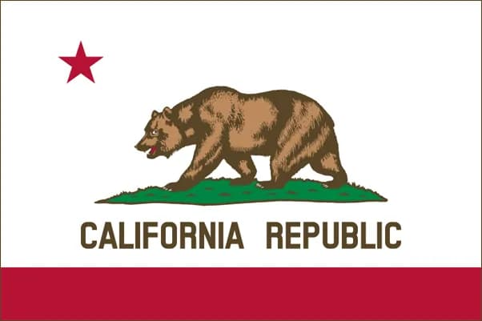

Kyle Roper
About Me
Hello! My name is Kyle Roper. I am currently working as a manager for an Elementary School After-School Program. On the side, I enjoy editing videos, playing video games, and playing piano. I am excited to learn more about web development and improve my skills in this field.
Sacramento, California

California is the most populous state in the United States and is known for its diverse geography, technology industry, and beautiful national parks. Sacramento is the capital city of California, with a population of over 500,000 people.